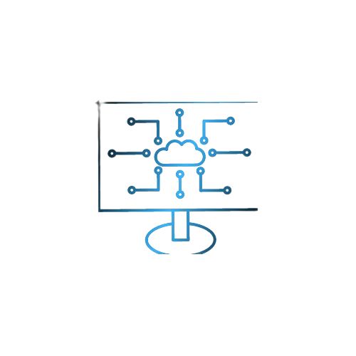
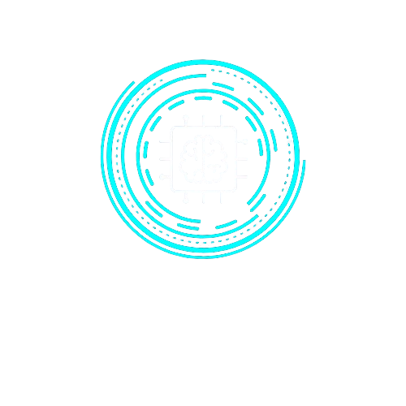

Desenvolvo pequenos projetos utilizando apenas HTML , CSS e JavaScript
Nossa empresa é especializada em desing gráfico e
desenvolvimento de web e branding. Nosso foco é
desenvolver soluções eficazes e impactantes para
ajudar nossos clintes no mercado

O Creativity Hub é liderado por um profissional com vasta experiência no setor de tecnologia, dedicado a impulsionar a inovação e a criatividade em soluções digitais. Com um histórico de desenvolvimento de projetos que mesclam arte e tecnologia, esse líder busca constantemente novas maneiras de transformar ideias em realidade através de ferramentas tecnológicas avançadas.
O diferencial do Creativity Hub é a fusão entre tecnologia de ponta e criatividade artística,
resultando
em soluções personalizadas e inovadoras. Ao invés de focar apenas na eficiência
técnica, o Creativity Hub coloca a criatividade no centro de cada projeto, garantindo não só funcionalidade, mas também impacto visual e estético. Com uma equipe multidisciplinar e uma colaboração estreita com os clientes, o Creativity Hub entrega projetos que se destacam pela originalidade e pelo alinhamento preciso às necessidades dos clientes.

Conheça meus ultimos projetos